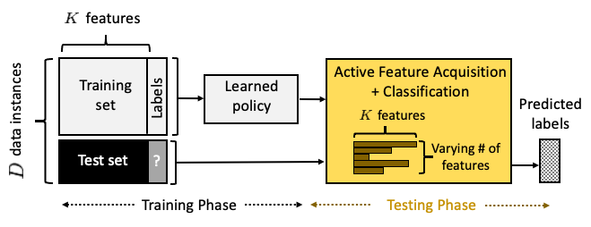
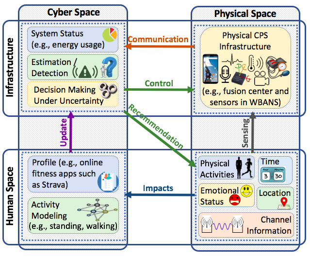
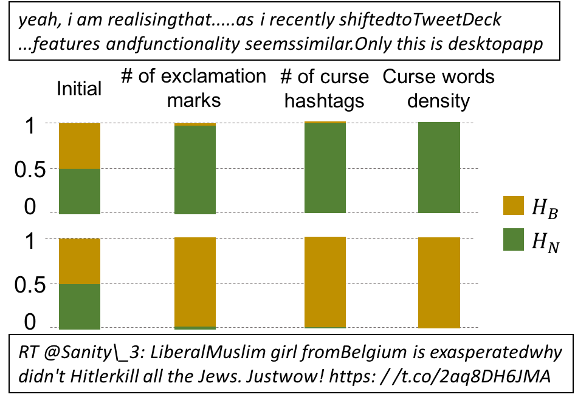
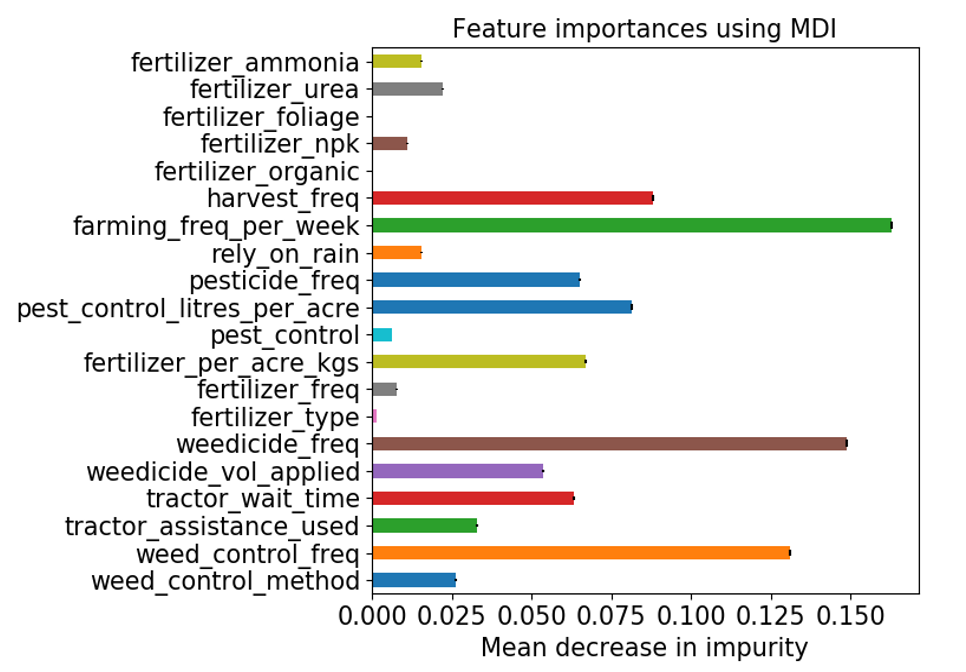
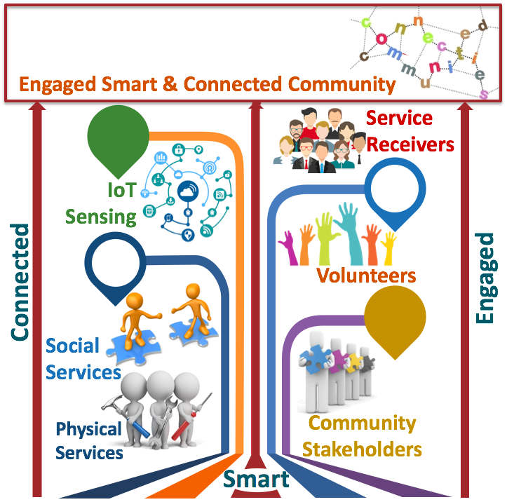
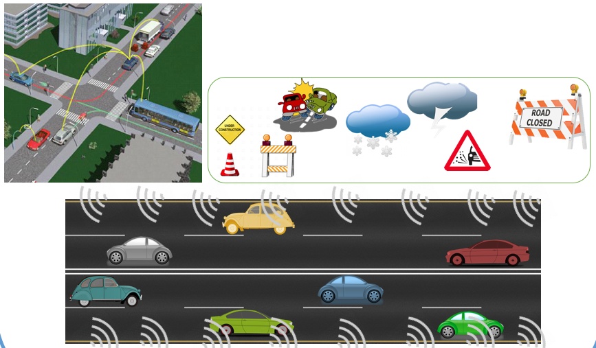
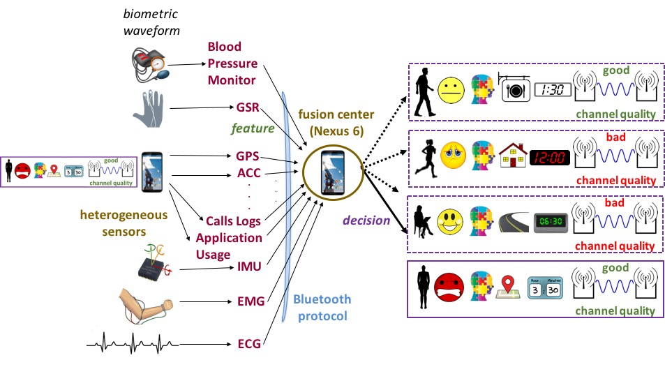
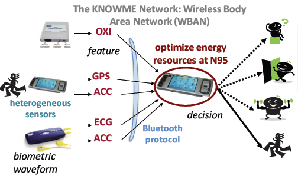
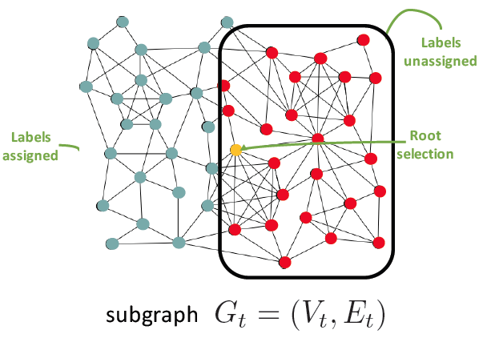
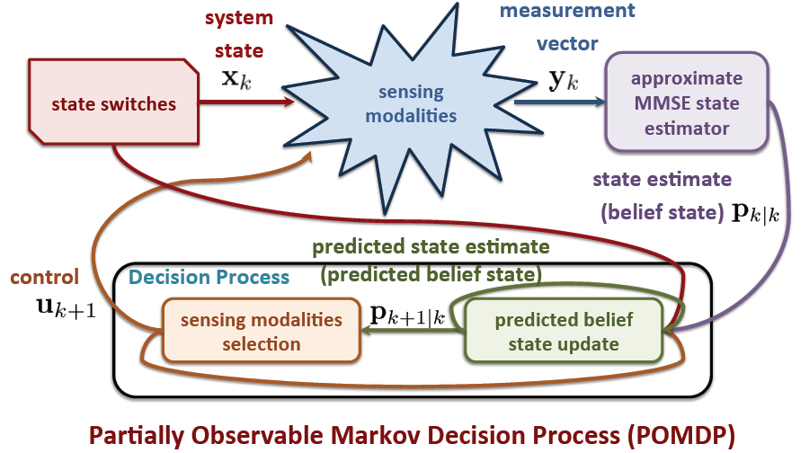

Projects
Current Projects
Sequential Instance-wise Machine Learning
|  |
In a typical supervised machine learning setting, the predictions on all test instances are based on a common subset of features discovered during model training. However, in many real-world applications, a feature is typically acquired at a cost, which can relate to among others, the time and effort spent in generating it, and its discriminative power. For instance, in healthcare, certain tasks may be very informative (e.g., magnetic resonance imaging) during the diagnosis process, but can be intrusive. In ubiquitous computing, limited energy resources can prevent continuous collection of high-fidelity data, or users may not wish to reveal answers to certain questions. Such cases give rise to the very interesting phenomenon, where the full set of features can be accessed during the training process, while during the testing process, a complete set of features for all data instances cannot be obtained (i.e., features are different for each instance by choice or due to constraints). Most existing machine learning algorithms, however, ignore resource constraints and/or acquire a general solution for all cases, while not scaling in big data settings. The goal of this project is to devise mathematical frameworks, theory and algorithms for dynamic instance-wise feature acquistion and prediction in various settings. |
Towards Optimized Operation of Cost-Constrained Complex Cyber-Physical-Human Systems
NSF CAREER award 1942330|  |
Self-driving cars and home assistants provide just a small glimpse of the future cost-costrainted complex
cyber-physical-human systems (CPHS) that will integrate engineering systems with the natural word and humans. This
project will devise new mathematical tools and methods to systematically describe CPHS and optimize their
operation. The application focus is on wireless body area networks, a natural CPHS representative with humans in
the loop, heavily resource-constrained operation, and heterogeneous components that are intertwined with and
altered by human behavior. The end result will help understand important factors related to the operation of
CPHS and how to optimize their operation. |
Cyberbullying Detection
|  |
Bullying, once limited to physical spaces (e.g., schools, workplaces or sports fields) and particular times of the day (e.g., school hours), can now occur anytime, anywhere. Cyberbullying can take many forms, however, it typically refers to repeated and hostile behavior (e.g., hurtful comments, videos and images) performed in an effort to intentionally and repeatedly harass or harm individuals. The consequences can be devastating: learning difficulties, psychological suffering and isolation, escalated physical confrontations, suicide. While techniques to automatically detect cyberbullying incidents have been developed, the scalability and timeliness of existing cyberbullying detection approaches have largely been ignored. The goal of this project is to derive provably optimal, yet scalable online strategies to minimize the time-to-detection of cyberbullying incidents. |
Towards Achieving Better Market Access for Smallholder Farmers
Google Research AI for Social Good Award|  |
Access to appropriate innovation, information and advisory services by smallholders farmers is a vital element in transforming agriculture and food systems. In Ghana, a middle-income West African country with rich natural resources, agriculture is a key economy sector, accounting for 23% of its national GDP with > 50% of its total labor force employed in agriculture. However, smallholder farmers, who produce most of the agricultural commodities on local markets in Ghana, are unable to sustain their livelihoods. Over reliance on rainfed farming, influx of middle men, high postharvest loss and unsafe production practices have made this situation prevalent in Ghana and Africa to a larger extent. Working along AGRI-WEB, a nonprofit organization that connects a diversity of members and partners dedicated to creating financial freedom and growth opportunities through investing in agricultural activities, the goal of this project is to develop better prediction models for the crop yields of smallholder farmers in Ghana to optimize postharvest shortage/glut. |
Past Projects
Community on Multimodality: Participatory Action, Service, and Support (COMPASS)
NSF award 1737443|  |
Those in need of help often do not know how to locate or access service providers. Likewise, service-providing
agencies often work in silos. The lack of communication also applies to volunteers; people do not know who to help
and how they can be resourceful. Response becomes even more problematic when a problem demands the coordination of
service providers, volunteers, and government structures, and after business hours, when the communication channels
that can aid people in need become sparse. The focus of this project is to (i) develop new data mining methods for
uncovering complex interdependencies within a dynamic sociotechnical system, (ii) devise novel information
processing, machine learning, and control methods to dynamically optimize delivery of human and physical services
under uncertainty with humans in the decision-making loop, and (iii) shed light on the ability of communities to
integrate emerging technologies to become more connected in human interactions. |
Machine Learning for Improving Classification and Detection in SSVEP-based Brain-computer Interfaces
NIH subcontract from the National Center for Adaptive Neurotechnologies|
Brain-computer interfaces (BCIs) are devices that enable people to control computer systems using brain activity. Since they require little to no voluntary motor control, they can help people with severe motor deficits (e.g., locked-in syndrome) to communicate, but can have applications for healthy individuals as well (e.g., multimedia and gaming). Steady-state visual evoked potential (SSVEP)-based BCIs are one common type of BCIs, where users are presented with a set of stimuli, each flashing at a unique frequency, and attention to one of these stimuli elicits changes in brain activity at the fundamental and higher harmonic frequencies of the flashing — an SSVEP — that can be measured using electroencephalography (EEG). In this project, we designed classifiers that meet various strict specification requirements for different SSVEP-based BCIs applications. |
Real-time Accident Detection
|  |
In recent years, urban mobility demand has become highly variable over time challenging the sustainability of transportation networks of major cities. At the same time, various types of incidents such as accidents, construction zone closures and weather hazards exacerbate the already congested transportation network. Timely detection of such events can offer an unprecedented opportunity to mitigate the consequences. In this project, we developed a mathematical framework for real-time accident detection in a road segment equipped with spatially distributed speed sensors of variable accuracy. Specifically, we designed fast and low-complexity algorithms that can quickly determine if a collision has taken place and where by appropriately selecting which sensors to query and when. |
Context-Aware Human State Modeling and Monitoring
SUNY Faculty Research Award A|  |
Fine–grained knowledge of human context information in terms of physical activity (e.g.,sit, walk), emotional state (e.g., happy, sad), surroundings (e.g., home, work) and mobile phone usage (e.g., web search, listen to music) offers an unprecedented opportunity to objectively and accurately understand when, where and what type of behaviors are exhibited. To this end, we have built an off-the-self body sensing platform that consists of an inertial measurement unit, an electromyograph, a galvanic skin response and a Motorola Nexus 6 mobile phone to monitor human context information over time. We have also devised a mathematical framework that formally describe how sensor capabilities, biomedical, contextual and other variables (e.g., channel information) and their interactions can come together to enable accurate and cost-efficient monitoring of human context information over time. |
Energy-Efficient Physical Activity Detection
|  |
Wireless Body Area Networks (WBANs) that consist of heterogeneous biometric sensors (e.g., heart–rate monitors, accelerometers) and an energy–constrained personal device (e.g., mobile phone, PDA), have the transformative potential to influence a wide range of applications including health–care, sports, military and emergency applications. However, the practical realization of a WBAN is hindered by a number of unique challenges, including energy constraints that significantly impact its lifetime. To address this issue, we have proposed novel resource allocation strategies that maximize the network lifetime by minimizing energy spent at the energy–constrained fusion center. The effectiveness of our proposed methods have been evaluated using extensive simulations on real data collected from a real prototype WBAN, the KNOWME network, used for preventing obesity. We have showed that we can improve energy gains by as much as 68% compared to state–of–the–art schemes, without compromising detection accuracy. |
Active Object Detection for Computer Vision
|  |
Object detection is a fundamental, yet very challenging task in image analysis. A typical object detection algorithm first generates a set of region proposals. These can be either fixed and class–independent or generated on the fly while searching for a particular object. Each such proposal is then assigned a class label by running a set of detectors. Evaluating a large number of region proposals will certainly lead to high detection accuracy, but will incur high computational costs if each detector evaluation is computationally expensive. In this line of work, we proposed an object detection algorithm that models image regions as vertices and overlap relationships as edges in a directed weighted graph. Information is propagated from labeled vertices through graph edges that operate as noisy channels via message passing over locally informative trees that are extracted from the original graph using an information-theoretic criterion. Influential vertices are determined by an appropriate centrality index. Our algorithm can be applied on top of any state–of–the–art region proposal method as it treats it as a black box. We evaluated the performance of our proposed algorithm on different scenarios and showed that in some cases only 0.45% of the total regions is evaluated with maximum 21.45%. |
Active State Tracking
|  |
Sensor heterogeneity complicates the inference process since observations generated by different sensors are of different quality and may be collected at a different cost. Thus, it is necessary to consider sensor heterogeneity when designing sensing algorithms, especially when the state of the system under observation changes over time. In the context of this work, we devised a general framework for active state tracking with heterogeneous observations, where the decision maker selects which observations to consider at each step based on accuracy and cost criteria. Various criteria were considered along with their effect on accuracy and were generalized appropriately to address the intertwined key problems of information characterization and unified sensing and tracking. Based on this framework, we derived fundamental theory that enabled us to characterize the structure of the optimum sensing algorithm and devise low-complexity alternative algorithms. |